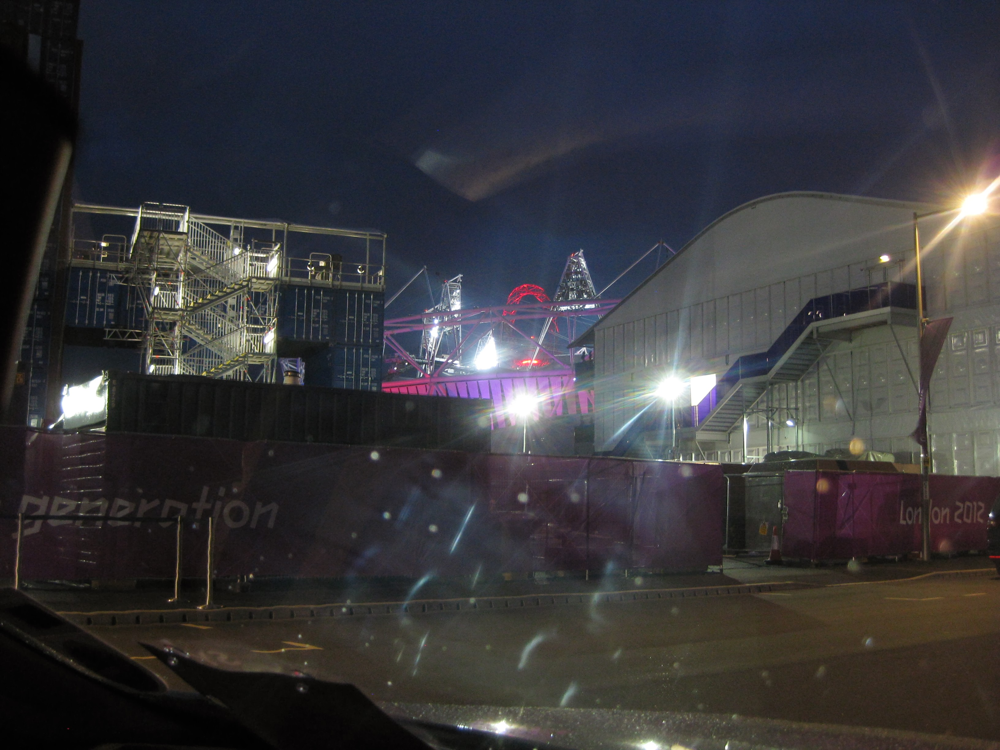
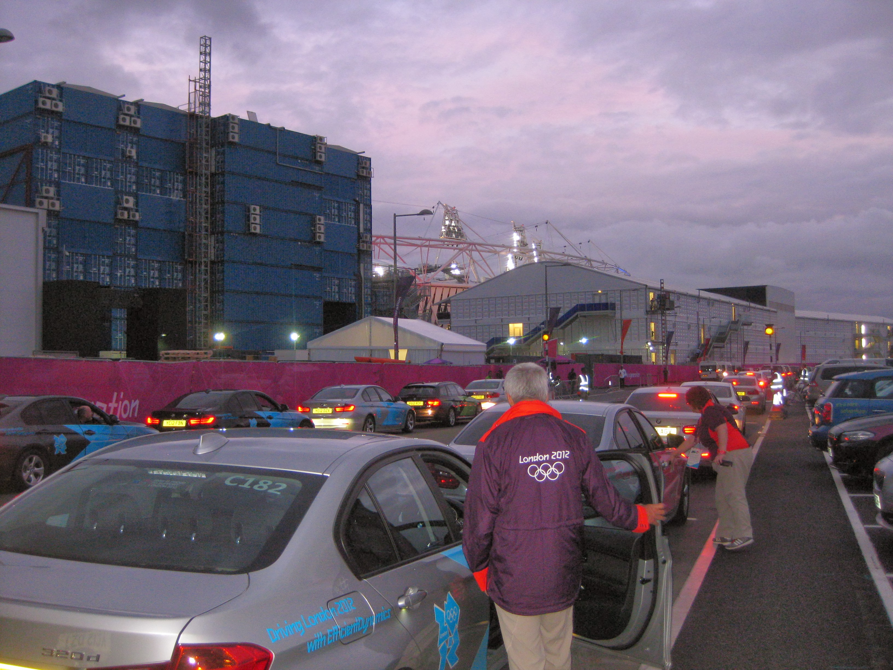

Shift 12 C158 Red Saloon 4.30pm to 2.30am
Monday 6th August 2012

Didn't wake up proper until 9.00am. Must have been tired. Treated myself to a Double Bacon McMuffin meal breakfast.
Back at hotel sat in the sun reading the Independent whilst my room was done. Could have done without the pool aerobics people opening the pool
doors and the trainer yelling at the top of her voice. Got to Newbury Park Tube at about 2.30pm. There was a cone blocking the entrance but as I
contemplated the situation people came off an arriving tube and headed to their cars in the car park. Took the spot vacated by a fellow volunteer.
On arrival headed into the Olympic Park. Was thinking about doing a bit of shopping but the queue to get into the London 2012 Megastore was
mega. It must have been a 15 minute wait just to get into the shop. Standing around soaking up the atmosphere meant I got asked loads of
questions by the public. I also was group photographer for a number of people. Wandered off to find a seat to read my Metro as I had left my
IPad in the hotel.
Checked in at 4.00pm. There were a few cars available in red group. They asked if I would be prepared to swap to driving an MPV later in the
evening. I said I would try anything once. Hot meal was bacon, pork, peppers and onion wrap. Very tasty. Sat upstairs on the red table and
watched the climax to the team show jumping. GB got into a jump off with the Dutch and won our first Team gold since Harry Llewelyn in 1952.
Cue cheers from all the waiting drivers. Despatcher arrived and asked if C158 in the red team was about. I was on the purple table talking to
Kim O'Brien so went and checked and found it was me. I had to go over to the car and see if I could find any lost property from the previous
driver. Did my checkout stuff and dumped my bag before finding a GamesMaker pin and Oyster card which got handed into workforce. Complemented
the catering manager on how tasty the wrap was and she offered me a second one which I was happy to take.
The Red and Purple teams were both prepped to go to World Square and Gate 1. The idea was to go on recce trips in a bunch of cars to
familiarise ourselves before setting off. Red team leader appointed and team call signs collected. Then we get told to go to the Athletes
Village at 6.15pm. There weren't many cars staging at the village and there was business. I was about to move up to the loading zone when we
got the call back to swap to MPV's. Had to go round the Stratford roundabout twice as I missed our turn off over the bridge back to base. By
the time I got back through Eton Manor VSA, parked up on P6 and got down to Shop Mobility they had decided they already had enough MPV's so we
had to keep our cars and go and sit upstairs on standby. We wanted to go back to the village where we had been about to be busy but they said
we would be busy enough.

Sat again in FDO and watched Jason Kenny beat the Frenchman Bauge in the Men's sprint to win the Gold medal to huge cheers. Then we got the
call to go to World Square which proved very easy to get to. There were a large number of cars there when I arived at 8.50pm but we moved
forward slowly but steadily and I got a trip at 9.15pm. Two Jamaican ladies and their British minder were going to the Copthorne Tara Hotel,
a new destination for me. They were quite chatty and obviously not athletes as their minder had got them closing ceremony tickets. Knew where
we were going up as far as Hyde Park Corner but then we headed off down Knightsbridge and the minder helped me out with the directions as DORS
said you have arrived at your destination when you clearly havn't. You have to turn up Earls Court Road then go right and then turn right just
by a tube station and then left as the bottom to the hotel. Didn't know it was High St Kensington Tube until later.
Was called back to Eton Manor as it was busy. As I pulled in I went straight to the loading zone. I had just enough time to get the charger
out of the boot and plug in the radio before I was off again with a French lady who was going to High St Kensington. She had been to the
Athletics and the handball (to watch the French). She had tried to get to the basketball to see the US dream team but the accredited seats
were full so she went to the velodrome and saw Jason Kenny win. We went past the Royal Albert Hall and the Albert Memorial. Dropped her off
just after the Tube at High St Kensington and headed back to Eton Manor. Pulled up and immediately had three passengers from the queue. First
time ever there have been more people than cars at Eton Manor.
There was no time to get DORS to reset as I couldn't switch the engine off for long enough. Luckily the front seat passenger was going to
Hilton Green Park which I can get to blindfold. I checked the address of the Stamford Hotel and that is on St. James Street which is off
Piccadilly. It's actually down a dead end side road so my passengers helped out by getting out on St. James Street. Journey back was left onto
Pall Mall and straight on to Trafalgar Square, then down Whitehall and left back onto the normal route. Back at FDO and checked out by 2.15am.
All night they had been letting people go early to catch their last trains as there would be no cars for lifts home. About a dozen of us stayed
on, without whom they would have been embarrassingly short of cars. Even though I had booked my park and ride we were sat for an hour before an
MPV was made avaialble to take people in an east direction. Some bastard was going to Woodford and took us so close to where he lived he had
only 5 minutes walk and we were miles from our next destinations. The old guy who had shown up in his uniform for training was one of our
merry band and he was trying to get the driver to go to Epping next cos he was going to the Triathlon the next day. I manage to get that
nocked on the head and we agreed that I would drive him to Epping which was only slightly out of my way so the lass could get to Barkingside.
He didn't stop wittering and telling me what I already knew and then couldn't remember where he had parked his car!! Got to bed at 4.15am